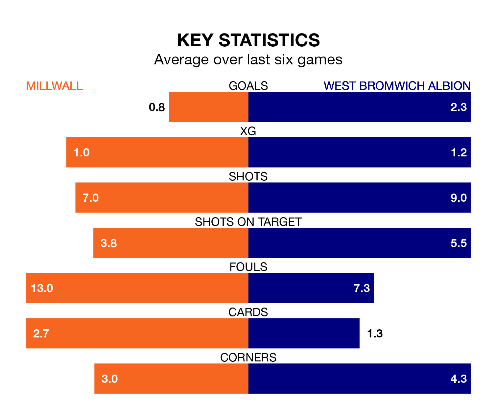

West Bromwich Albion face Millwall on Friday seeking to protect their long unbeaten run in EFL Championship.
The Baggies are unbeaten in six, with four wins and two draws, ahead of the 1pm kick-off.
They face a Millwall team who have won three and drawn one over the same number of games.
With 36 goals in 38 games so far this season, Millwall are scoring at below the league average rate with 0.9 goals per game. But they are conceding fewer than average too, letting in 50 goals at a rate of 1.3 per game.
West Bromwich, meanwhile, are above average scorers, with 1.6 goals per game, compared to a league average of 1.4. They have conceded 0.9 goals per game.
In Alex Palmer, Albion can rely on one of the league's safest pair of hands. He has kept 16 clean sheets in his 38 appearances this season, and only one other 'keeper – Leeds United's Illan Meslier – has been able to prevent the opposition scoring on more occasions in EFL Championship.
In the Lions's net, Matija Šarkić has eight clean sheets in 24 games. He has conceded a goal every 86 minutes, 20% more often than the 104 minutes between goals for Palmer.
In the last 10 years, Millwall and West Bromwich have played each other on 10 occasions. Millwall won four of them, West Bromwich two, and they drew four times.
On average, the Lions scored 1.0 goal and the Baggies 0.8 in those matches.
Their last meeting was on September 23, when they played out a 0-0 draw.
The Baggies are fifth in the table after 38 games, of which they have won 19 and drawn nine, earning 66 points.
The hosts are 11 places behind the away team in 16th, with 11 wins and 10 draws putting them on 43 points.
Millwall's last match was on March 17, a 2-0 loss against Leeds United.
West Bromwich beat Bristol City 2-0 last time out, on March 16, with Jed Wallace and Tom Fellows on the scoresheet.
Updated: 12:16 (UTC), 25/03/24